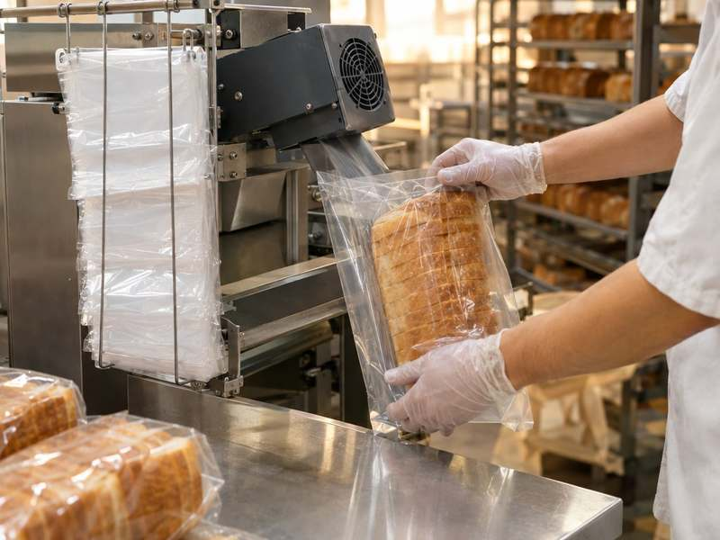

· WicketedBags.com
How to choose the right bread bag size.

A bread bag that is too tight tears or crushes the loaf. One that is too loose looks sloppy on the shelf and wastes film. And on a wicketed line, the bag also has to fit your bagger, or it will not open and pull off the way it should. Getting the size right is the most useful thing you can do before you ask for a quote.
Start with the loaf, not the bag
Every size decision begins with what goes inside. Before you measure anything, write down the products you will pack in this bag. A sandwich loaf, a round, a long baguette-style bread and a pack of rolls all have different shapes. If one bag has to cover several products, size it for the largest one and check that the smaller ones still look neat inside.
Measure the loaf after it has cooled, the way it will go into the bag. Note its width, its height and its length. Height matters more than people expect: a tall loaf needs depth in the bag, and that is where a gusset comes in.
The three numbers: width, length and gusset
Bag sizes are usually written as width, gusset and length. Here is what each one means.
- Width is measured across the face of the bag, from side to side, with the bag lying flat.
- Length is measured from the opening down to the bottom of the bag. Say whether your number includes the lip or not, because that changes the size on the order.
- Gusset is the fold in the side or the bottom of the bag that opens out to give the bag depth. Measure it fully opened.
Flat bags have no gusset. They work well for flatter products. Gusseted bags hold their shape around taller, squarer loaves, so the bread looks full and upright instead of squeezed.
Leave room for the loaf to go in, and for the bag to close
The bag has to be bigger than the loaf in two ways. It needs enough width and depth for the loaf to slide in without catching, especially at line speed. And it needs enough length above the loaf to close it, whether you use a twist tie, a clip, tape or a heat seal. How much extra you need depends on your loaf, your closure and how you load, so the best test is a real one: try your current bag, or a sample, with your actual product.
The lip and the wicket holes
A wicketed bag is not just a bag. It is a bag with a lip: an extra strip of film at the top of the bag. Two holes are punched through the lip, and a stack of bags is slid onto a U-shaped wire called a wicket. When a bag is filled and pulled away, the lip stays on the wire and the next bag is ready.
That means a wicketed bag has a few measurements that a loose bag does not:
- Lip size: how tall the lip is.
- Hole spacing: the distance between the centers of the two wicket holes.
- Hole position: how far the holes sit from the top edge.
- Hole size and shape, so the bags sit right on your wire.
If these are off, the bags may hang crooked, bunch up, or not come off the wire cleanly. Send us a bag you already run and we can match it.
Match the bag to your bagger
If you load by hand, you have a lot of freedom. If you run an automatic or semi-automatic bagger, the machine sets many of the rules. The bag has to open the way the machine expects, the lip and holes have to fit its wicket, and the size has to fit what the machine can handle.
Before you order, gather:
- The make and model of your bagger, if you use one.
- The wicket wire your stacks hang on today.
- A few sample bags that already run well on that machine.
With that, we can make a bag that fits your line.
Film and thickness
Size and film work together. A heavier loaf needs a sturdier bag, and the film type changes how the bag feels and looks. We make wicketed bread bags in both PE and PP film, on FDA-compliant films. If you pack fruit and vegetables too, see our wicketed produce bags.
Do not forget the print area
If your bag is printed, its size also sets how much room your design has. Keep artwork below the lip, since the lip stays on the wicket, and away from the seals and edges. A taller bag gives you more space for your logo and product name. We flexo print up to 8 colors, or make clear bags with no print at all. Our guide to custom printed wicketed bags covers what to send for artwork.
A quick checklist before you ask for a quote
- The products going in the bag, and the size of the largest one.
- Width, length and gusset, and whether the length includes the lip.
- Lip size, hole spacing and hole position, or a sample bag.
- Your bagger make and model, or "by hand".
- Film (PE or PP), and how sturdy the bag needs to be.
- Print: number of colors, or plain.
- How you close the bag.
Send what you have. Missing a few answers is fine: a sample bag fills in most of the blanks. You can read more on our wicketed bread and bakery bags page, then use the quote form below or email quote@wicketedbags.com. Every bag is made to your spec in Brooklyn, NY, with a typical lead time of 3–4 weeks.